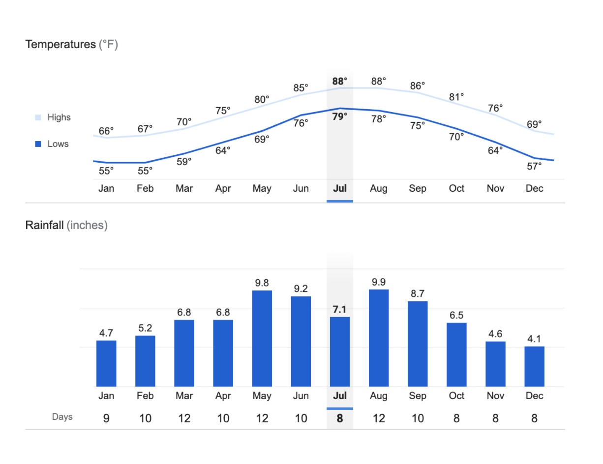
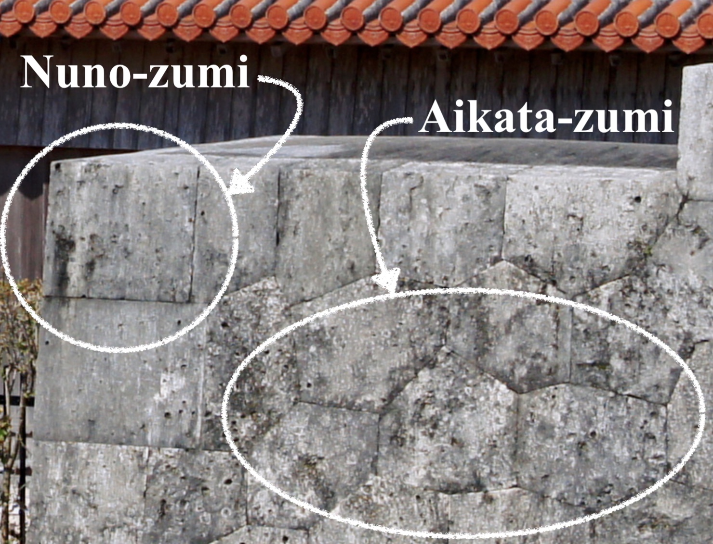
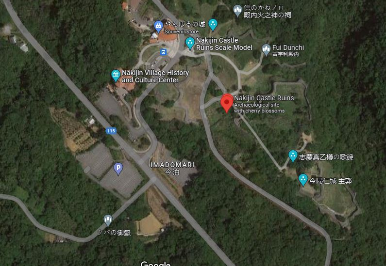
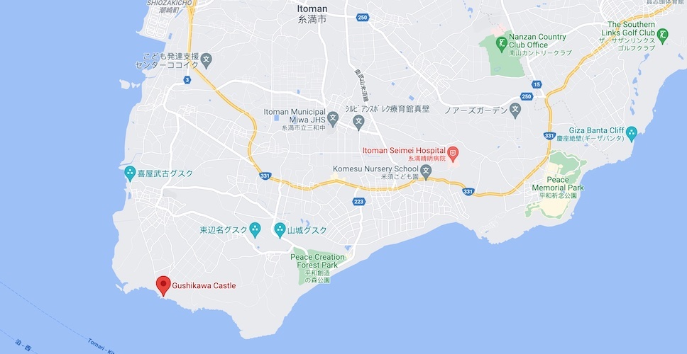
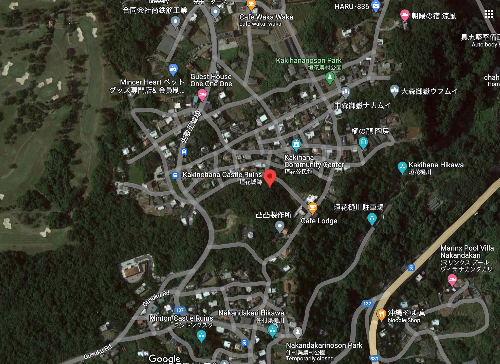

Travel Guide
Introduction
What's in the Guide?
- 12 Castles
- 3-star rating system
- Photos
- Points of Interest
- Getting There and Parking
- Where to Eat
- Side Trips
- Overview
- On the Trail
- Maps
Why Create a Guide?
I originally had the idea for this guide as a kind of augmentation to the Okinawa Island guides the US Marine Corps MWR (Moral Welfare and Recreation) usually handed out to servicemembers new to the island. As I dug into the content for this guide, I began to realize I had been to the castles, but hadn't really seen them, I had missed many exciting and interesting details. So, this guide is an attempt to make up for that loss, and to both help and serve other island adventurers, hikers, history buffs, families with children, deployed service members, ESL teachers, and the just plain curious, to discover the amazing castles that have been patiently waiting for +500 years for you to discover on Okinawa.
How to Use this Guide
The guide is divided into the Introduction section, then a section for each region of the main Okinawa Island: Hokuzan (North), Chuzan (Central), Nanzan (South). Each castle has a full-page photo, a 1-page summary, a 3-star rating, and short paragraphs for "Points of Interest", "Getting There and Parking", "Where to Eat", and "Side Trip". After the 1-page summary is a multi-page "Overview" and "On the Trail" descriptions of what you can expect as you make your way through the castle gates and journey back into history. It's my sincerest hope you'll enjoy this guide and the best compliment you can give is to share and recommend this to your family and friends.
Regions
Okinawa Island is approx 100 km north to south, and on average 11 km east-west, and broken up into 3 historical regions during the Sanzan (3 mountain) period of 1314-1429. They were:
- Hokuzan in the north
- Chuzan in the central area
- Nanzan in the south

Photo by kallgan/CC BY-SA-3.0
The Maps
Maps and satellite views are provided to show both general location and points of interest in the area of the castle, and nearby.
The 12 castles covered by this guide are shown below.

Map data ©2021 Google
The online version of this map is available here:
Star Rating System
Each castle has been rated on a 3-star grading. You don't want to miss great sites, but even the OK sites are often worth your while, as castles are often built atop ridges and hills with spectacular vistas. Okinawa is a breath-takingly beautiful island, and even a site with scattered ruins can often be a wonderful experience for young and old.
Castle Rating
| ⭐⭐⭐ | Great |
| ⭐⭐ | Good |
| ⭐ | OK |
Vocabulary
| Okinawa - 沖縄 | bay: wan - 湾 |
| Naha - 那覇 | beach: hama - 浜 |
| Nago - 名護 | river: kawa/gawa - 川 |
| city: shi - 市 | hill: oka - 丘 |
| north: kita/hoku - 北 | mountain: yama/san/zan - 山 |
| east: higashi - 東 | cave: do - 洞 |
| south: minami/nan - 南 | valley: tani - 谷 |
| west: nishi - 西 | waterfall: taki - 滝 |
| small: ko/cho - 小 | park: koen- 公園 |
| medium/center: chu/naka - 中 | garden: teien - 庭園 |
| large: dai/okii- 大 | castle: gusuku/shiro - 城 |
| point: saki/zaki - 崎 | ruins: ato - 跡 |
| sea: umi/kai - 海 | temple: ji - 寺 |
Okinawa Castles 101
Okinawa really is an island paradise, and it seems like everywhere you turn, you'll stumble over an ancient castle wall or discover some new historical ruins. On the https://gusukumitisirube.jp website alone, they list 211 castle ruins, not including additional holy sites. I attempted to cover the best representative castles, and left out many sites that although may be historically significant, might not warrant a day trip.

Photo by Fg2/Public Domain
The Okinawan word for castle or fortification is gusuku. They are typically found on ridges and hilltops, although there are some exceptions. The height of the gusuku period was during the 12-15th centuries, and were constructed for the regional leaders called Aji (按司). Agriculture was believed to have begun in Okinawa between the 10-12th centuries. The only fully reconstructed gusuku is Shuri Castle in Naha. In this book, we cover the 5 castles that are designated as UNESCO World Heritage sites: Nakagusuku, Katsuren, Nakijin, Zakimi and Shuri Castle. Shuri was the only castle to be used by an Okinawan king, Sho Tai, in modern times. The building techniques used to create the gusuku were likely transmitted from Miyako Jima (宮古島) and Yaeyama (八重山) Islands to Okinawa. Many of the sites are nothing more than large archeological areas that have been designated as parks and/or historical sites. Some castles have original walls in various states of disrepair, and some have partially or fully reconstructed walls. Often you'll notice different original construction styles at the same location that organically occurred after generations of use. The first three small kingdoms to rise at the beginning of the gusku period also known as the Sanzan (3 mountain) Period, were Nakijin Castle (今帰仁城) of the northern mountain (Hokkuzan), Urasoe Castle (浦添城跡) of the central mountain (Chuzan), and Nanzan Castle (南山城) from the southern mountain (Nanzan). All three paid tribute to the Chinese emperor during the Ming dynasty (1368-1644). Of the three, Urasoe was the most powerful at that time. Sho Hashi from Sashiki Castle (佐敷城), in the south eventually overthrew the Urasoe kingdom (Chuzan) in 1405 and unified the 3 kingdoms in 1429, creating the Ryukyu Kingdom. For a period of nearly 100 years, local Aji still struggled with civil war and political turmoil, and in 1523, all local Aji were moved to Shuri Castle bringing an era of stability and making Shuri the focal point of Okinawan culture, politics and economy.

Photo by Almighty Franklinstein/CC BY-SA-2.0
The castles that made the list for this guide were chosen to be easiest to find with Google Maps and Apple Maps. Many other Okinawan guidebooks mention castles in passing, but don't give specifics which leads to frustration when attempting to locate the site. There are many, many more castle ruins than shown in this guide, be on the lookout on your travels, and you'll be pleasantly surprised at finding small roadside signs that end up leading you to some offbeat castle ruins.
Every castle here is worth a day trip. Atop the castle walls, it's not hard to imagine a guard or an Aji surveying his area of responsibility, it really makes the history of this magical place tangible. I hope you'll catch the bug and make exploring gusuku part of your itinerary while travelling in Okinawa.
Visiting Castle Sites
Okinawa has first rate roads and highways, all the main sites have parking and signage, and some charge admission, it helps to always have some local currency, and often cold and hot beverages are available along the roadways at vending machines.

Photo by Boudewijn Huysmans/CC0 1.0
You'll want to feel comfortable with Google/Apple maps before going and plan to stop for refreshments and/or lunch/dinner on the way back. There are plenty of convenience stores like FamilyMart, HotSpar, Lawson, 7/11 and fast food options abound like A&W, MOS Burger, KFC, McDonalds. Feel free to get out of your comfort zone, and try Okinawa soba, ramen, Japanese curry, or festival/comfort food when it's available. (takoyaki, taiyaki, yakitori, okonomiyaki, etc.)
Planning Your Visit
The biggest concerns while out on the trail are: sun exposure, heat/humidity and weather/rain. The average temperature is 73°, and average rainfall is 72". Okinawa is subtropical, so bring your sunscreen, wide-brimmed hat, and plenty of water (hydration backpack, water bottles, etc). If you do have a small backpack with you, it doesn't hurt to bring hydration tablets, compass (your phone may already have one), small first aid kit, external battery for your phone, and a portable umbrella - for sun or rain. Back in the car, I typically have a cooler with ice, extra water, rehydration drinks, ice coffee and snacks. When hiking, I also wear hiking shoes, comfy socks, and a buff (stretchy ring of fabric), to keep the sun off the back of my neck, cheeks and nose. Okinawa does have 1 species of venomous snake, locally called the habu (Protobothrops flavoviridis), it's primarily nocturnal, and most active September through November, and bites about 50 people per year on the island, and is fatal in about 1% of cases. Remember if it looks like a stick on the trail, double check that it's not a snake.
Weather data ©2021 Google
Sensitivity to Cultural Sites
Exploring and discovering castles is exciting business, it's an amazing feeling to walk along stony paths, under torii gates and ancient gajumaru (banyan) trees. The stone walls are dark and undulating and up top the subtropical sun beams, and the blue-green waters of the East China Sea to the north-west and the Philippine sea to the south-east seem to glow. It's also an opportunity to get your steps in, but also remember to be a good neighbor and ambassador while visiting. Some sites will have religious significance and one out of the way sites I visited had human remains visible in an alcove. Some entrances to caves and tombs have light fencing that is more of a suggestion than a barrier, but it's our responsibility to respect the local traditions, history, other visitors, and not overstep our bounds.

Photo by 松岡明芳/CC by SA 4.0
Architectural features
Castles in Okinawa are known as gusuku (城), you'll often see it in the name of a castle, like Nakagusuku, which translates to naka=middle/central and gusuku=castle/fortification. The term can be a bit confusing because gusuku has connotation with sacredness, and some locations that are called gusuku don't necessarily have walls or military significance. The castles/gusuku we cover have some similar architectural features that typically include:
- Walls - original walls are typically limestone or coral, reconstructed walls are typically limestone masonry. There are 3 main types of wall constructions in Okinawa: nozura-zumi (rubble), nuno-zumi (Ashlar masonry), and aikata-zumi (turtle-back). Examples of all 3 can be seen at Nakijin, Nakagusuku, Shuri and Zakimi Castles.
- Nozura-zumi: the rocks are not modified, and are stacked to create the walls looking like mounds of rubble.
Photo by captain76/PD - Nuno-zumi: have more familiar rectangular shapes and lines similar to Ashlar masonry. This is often seen on corners and gates, where heavy, precisely cut stones are required.
- Aikata-zumi: These are cut in polygons, or "turtle-back" shapes. Makes for a very strong wall in all directions, like a completed puzzle.

Photo by 663highland/CC BY 2.5
- Nozura-zumi: the rocks are not modified, and are stacked to create the walls looking like mounds of rubble.
- Bailey - also known as wards, are areas surrounded by a curtain wall. They can be sequential, or concentric, or any combination sharing one or more wall

Google Map data ©2021 - Gates - heavily fortified and sometimes included a stone arch, or a tower. Passing through the gates gives you a reminder of how thick the walls really are.

Almighty Franklinstein/CC BY SA 2.0 - Main Hall - Or Great Hall / Seiden (正殿) was the room for affairs of state including celebrations and audiences. Shuri Castle has a reconstructed Main Hall, and at other castle sites, you may see the posts or post holes that elevated the main hall and other buildings.

Google Map data ©2021 - Utaki (御嶽) - is an Okinawan term that indicates a sacred place, that is often in or near the castle. It can be a mountain, a grove of trees, grotto, cave, spring, etc that has particularly religious meaning.
Okinawa Castles in the Movies
Karate Kid II

Photo by Fair Use
In the movie, "Karate Kid II", Daniel and Kumiko visit the expansive coastal castle of Sho Hashi, the last king of Okinawa. Where is that castle? Is it still standing? Truth be told, the movie was filmed exclusively in Oahu, Hawaii, so no actual castles were used, but it does beg the question, was the movie's castle inspired or modeled on a real one? Let's find out.
Here's a clip that shows the castle in Karate Kid II:
Karate Kid II - The Castle
The historical king Sho Hashi mentioned in the movie, has 5 castles closely associated with his rule, so we'll touch on those, but there's a 6th castle that I think could have been the inspiration for the movie.
Castle Candidates for Karate Kid II
- Sashiki Castle
- Urasoe Castle
- Nakijin Castle
- Nanzan Castle
- Shuri Castle
- Gushikawa Castle <-- ( ** spoiler alert ** )
Sho Hashi began as the Aji (local leader) of Sashiki Maguri (district) in the Chuzan (central Kingdom) during the Sanzan (3-kingdom) period. Initially, Sho Hashi would have called Sashiki Castle his ancestral home. There is a shrine now at Sashiki Castle, but not even the castle walls remain at this site.

Photo by Sturmgewehr88/CC BY-SA 4.0
Sho Hashi began his expansion from Sashiki castle to overthrow the central kingdom of Chuzan, which was headquartered at Urasoe Castle. At that time, this was the largest castle on Okinawa, and today is an easy visit just north of Naha.

Photo by あばさー/PD
Next, Sho Hashi spread his reign north with the capture of the Hokuzan (northern) kingdom and the surrender of Nakijin Castle. This is the only remaining castle in the Hokuzan (north) region, and is a great spot to enjoy the cherry blossoms in January and February, and is a peaceful spot to visit with great views of the ocean. It's now a UNESCO World Heritage site.(UNESCO 972-003)

Photo by FoxyStranger Kawasaki CC BY-SA-3.0
Finally, Sho Hashi's take over of the southern (Nanzan) kingdom Nanzan Castle brought the 3rd and final region under his reign. Today's there's only a shrine and an elementary school that stand on the spot of the mighty southern castle.

Photo by Kugel PD-Self
By uniting the 3 regions of: Hokuzan, Chuzan, Nanzan, Sho Hashi created the Ryukyu Kingdom, thus ending the Sanzan (3-kingdom) period. Sho Hashi set up residence at Shuri Castle, which is the best maintained castle today, and is also a UNESCO World Heritage site.(UNESCO 972-007)

Photo by Savannah Rivka CC BY-SA 4.0 INT
And finally, the last castle in our list is Gushikawa Castle. This is my best guess at a location that matches what they were trying to come up with in Karate Kid II. An ancient castle, built along the water with a fantastic backdrop. Although not linked to Sho Hashi's rule like the previous castles, and not as mighty as any of them, Gushikawa Castle it is the only existing coastal castle I've found that still has walls, and you can visit.

Photo by Captain76/Public Domain
It's located on the very southern tip of Okinawa near Cape Kyan and the Kyan lighthouse. The two things that make this castle so unique are it's location, and a secret sea cave. It's built on a rocky outcrop which affords it views of the ocean on three sides, and it's rubble style walls drop down to the sea cliffs, making this castle quite a photo op, there's a blowhole inside the first bailey which drops down to a secret sea cave below. The story with the cave is that it could have been used to bring up supplies or perhaps for a quick getaway. As an added bonus, Gushikawa Castle is about 100m west of a popular cliff diving and swimming hole. Definately worth your time to check out.

Photo by Captain76/Public Domain
Chasuke's Journey

Photo by Fair Use
In this 2015 Japanese movie, "Chasuke's Journey", the protagonist, Chasuke, is heaven's tea server, and Nakagusuku Castle becomes the backdrop for heaven. Here's the trailer showing the distinctive outerwall (warning, if you blink, you'll miss it):
Chasuke's Journey
Zinnia Flower

Photo by Fair Use
In this 2015 Taiwanese movie, "Zinnia Flower", one of the 2 main characters, Ming visits Shuri Castle. Here's a trailer that shows Ming approaching the gates of the castle:
Zinnia Flower - Shuri Gate
And in this scene from the same trailer, you see the wall of the castle:
Zinnia Flower - Shuri Wall
North - Hokuzan
Included in this section
- ⭐⭐⭐ Nakijin Castle (UNESCO 972-003)
- Dimensions: 195 m x 370 m
- Constructed: 12 - 13th century
- GPS: 26.6909, 127.9300
- Elevation: 90 m
- UNESCO World Heritage Site (972-003)
- Large castle grounds, well maintained, good explanatory signs
- Stunning views
- Cherry trees カンヒザクラ(寒緋桜) blossom in Jan & Feb
- Iheya, Izena and Yoron Islands can be seen from here
- Virtual Reality experience, "MR The Battle of Nakijin", available with advanced reservation: https://select-type.com/rsv/?id=e0WRdJhXTCQ
- Distance: 90 km north of Naha / 65 km north of Okinawa City
- Car: Nakijin Castle Ruins, 5101 Imadomari, Nakijin, Kunigami District, Okinawa 905-0428, Japan (今帰仁城跡)
- Bus: From Naha Bus Terminal, take a Naha-Nago bus, then from Nago, take Bus #66 to Nakijin Castle Ruins (Nakijin Joseki)
- Parking: Free for about 150 cars and buses.
- Admission: 400¥ for adults, 300¥ students and free for preschoolers.
- Hours: 8 am - 6 pm Sep - Apr, and 8 am - 7 pm May - Aug.
- https://www.nakijinjoseki-osi.jp
Nakijin Castle (今帰仁城跡)
⭐⭐⭐ Great

Photo by Hiroaki Kaneko/CC SA 3.0
Castle Data
Points of Interest
Getting There and Parking
Where to Eat
Kishimoto Shokudo (元祖木灰沖縄そば きしもと食堂), 5 Toguchi, 本部町 Motobu, Kunigami District, Okinawa 905-0214, Japan. Hours: 11 am - 5:30 pm
Side Trip
Maps - Nakijin Castle
Map data ©2021 Google

Map data ©2021 Google
Overview - Nakijin Castle
Built over the 12-13th centuries, it's at an elevation of 100m and covers an area of 195 x 370m. This is one of Japan's top 100 castles, and a UNESCO World Heritage site. Cherry blossoms in Jan and Feb.
On The Trail - Nakijin Castle
Visit the Nakijin Village Gusuku Information Center to purchase your ticket and pick up a guide pamphlet. The museum is included with your ticket. The "Nakijin Village (Museum) History and Cultural Center", has a restroom, souvenir store and small soba shop. With tickets in hand from the Gusuku Information Center, cross the road, and check out the outdoor topographic scale model of Nakijin Castle. The stone monument to the right of the model reads:
Nakijin Gusuku
This miniature shows the Nakijin castle at its most prosperous period between the middle of the 14th century and the beginning of the 15th century in the size of 1/100.
Shijima-jokaku
It was considered to be the place where the vassals lived. And the remains of excavation pillar building, stairs and stone pavement way were found here
Uushimi
It was considered to be the place of fighting training for castle soldiers. It was told that horses were bred at that time.
Syukaku
Soil and stone were buried inside of the stone wall built at the second period and The foundation stone was built at the third period.
Uumyaa Uutibaru
It was presumed that the southern side was used as an open space and the northern side was used as a living space.
Just to the right of the stone monument are some samples of stones used for wall creation. Follow the gravel path past the monument and scale model, it will cross the road, you'll see small “Route” signs to guide your way, as well as signs warning about the danger of climbing on the walls. After crossing the road, it may not be obvious, but you are actually passing through the exterior wall of Nakijin Castle, into the large 1st bailey, known here as the “Gaikaku” 外郭（がいかく）. Today the wall is a couple meters high in some spots, but it likely would have been up to 2 stories high when the castle was in its prime. Continuing along, the gravel path will split. Follow the left fork and on your left you'll see an artistic recreation in photographic tiles of a cooking area that was excavated. The description next to it reads:
During the 2007-2009 excavation survey, a squarely dug hole (fire pit) and surrounding six pillar holes were discovered. The insides of the square-shaped hole were burnt red by fire, and carbonized rice and wheat seeds were found in the bottom. From this, the remains were thought to have been used for cooking
The left fork continues on to a traditional prayer hut used by the Noro/Priestess. This place of worship is called the “Fui Dunchi” 古宇利殿内. The sign nearby reads:
Fui Dunchi
Because the name "Kouri" is pronounced "Fui" in the Okinawan dialect, this structure is called "Fui Dunchi." The small shrine faces northeast, in the direction of Kouri Island. Kouri is the only outer island that is a part of Nakijin Village and the Island's residents pray at this small shrine in August of the lunar calendar. Prayers are offered by the Noro Priestesses of Nakijin during the religious events of Imadomari. This structure was reconstructed based on old photos and relocated to this site in 2010.
Return to the main path, and you'll come to a small ticket kiosk, with a sign, “Will cut it here ticket”, and 3 stone monuments for the castle. The middle monument is for the World Heritage Gusuku Sites and Related Properties of the Kingdom of Ryukyu Nakijin-jo Site, and has an english translation. Make your way past the ticket kiosk towards the high castle walls and main gate or “Heiromon” 平郎門 . The gate was restored in 1958, notice the viewing ports on either side. After passing through, take a look through the ports, and notice how thick the walls are. You are now entering a 2nd bailey, on a cherry tree (sakura) path, you'll find this ultra picturesque (and sometimes filled with butterflies) when the cherry blossoms are blooming mid-January to mid-February. This path is a new addition, and after a few feet, on your left you'll see the Oushimi 大隅 area, which is bailey #3, horses were quartered here and soldiers could train with them. Continue down the cherry tree path and just before the stairs, you'll see a dirt path, known as the Kyūdō 旧道, or “Old Road”, which is the actual path before the wide cherry tree path was built. If you're wearing sensible shoes, take this to the top instead - it's not off limits, and both the stone staircase and the dirt path lead to the same place at the top. Hopefully you took the “Old Path”, there's a bit more shade here, and you'll see original stone walls, as you ascend the rustic path. Now at the top, you'll see the main path covered with gravel and to the top of the cherry tree path staircase.
Make your way around the top to the different areas, there's the Umiya 大庭（ウーミャ）or “Great Garden” that the main, north and south halls surrounded. The sign describing the area's purpose:
Umiya Court
It is believed that the Umiya court of Nakijin Castle played a central roles similar to the Una court of the Shurijo Castle, where political gatherings and religious ceremonies and rituals were held. It is thought that after ascending the stairs of Shichi-go-san (seven-five-three), the Umiya court was surrounded by Seiden (Main Hall) at the front center, the Nanden (South Hall) to the right, and the highest point to the north the remains of the Hokuden (North Hall). Remains of a structural foundation can still be seen today at the Hokuden site. The photograph shows an annual ritual, Gusuku-Umi, held in August of the lunar calendar. During this ritual, the Nakijin Noro priestess, that handles the ceremonies and rituals of Nakijin Gusuku offers prayers to the gods for the safety of the village, prosperity of the descendents, and the happiness of the world (known as Yugafu).
You'll see a large stone monument with poetry here as well, and, the marker reads:
Monument Inscribed with a Poem for Shigema Utudaru
Outline of the Poem: South of Nakijin Gusuku was the village of Shigema, where Utudaru, a woman of great beauty resided. People throughout the Kingdom walked about this maiden with beautiful black hair, and soon she was called Nakijin Ukami (goddess of Nakijin) and served as the concubine of the Sanhoku King. She lived at the castle with her days filled with happiness and without a worry. However, the King, who was advancing in age, was concerned as he and his Queen had not yet produced an heir to this throne. The Queen, as well as Shigema Utudaru, prayed constantly to be blessed with a child. Eventually, the Queen conceived a long-awaited child. The poem likens this event to that of an orange tree bearing fruit out of season, and a serene and peaceful time is portrayed with the happy cries of a child.
The Uchibaru 御内原（ウーチバル）sign explains it was an area cor the women of the court, it says:
Uchibaru
The location at a higher point on the northern side of the Hokuden (North Hall) site is called the Uchibaru. According to legend, this area was where the chambers of the court ladies were located, and the most important Utaki (also called Ibe, a sacred site) is also found here. The view from the northern margin of the Uchinbaru is particularly open, and most of the walls of the Nakijin-jo Site can be seen. The mountains of Kunigami, and the surrounding islands of Iheya and Izena can be also be viewed from this location. Especially on sunny days. Yoron Island (Oshima County, Kagoshima Prefecture) can be seen in the distance, which is 22 km away from Cape Hedo, the northernmost point of Okinawa Island.
There are multiple holy sites in the upper part of the castle, the Upper Utaki monument gives a good overview of utaki's and the purpose of the Upper Utaki being the holiest of sits being used for prayers for prosperity and security:
Upper Utaki
Utaki are sacred sites unique to Ryukyuan beliefs, where rituals and ceremonies are held to honor gods, ancestors, and natural forces. They are usually somewhat small and located in places that have a special natural feature, such as a grove of trees, a cave, spring, or unique arrangement of stones. The Tenchiji-Amachiji, also called the Upper Utaki, is the most important utaki at Nakijin, where the guardian god of the castle is believed to reside. In the past, ladies of the court offered prayers for the prosperity and security of the kingdom and for good harvests, and men were prohibited from entering the walled enclosure. Tenchiji-Amachiji is still used for worship today, with important ceremonies conducted twice a year. Here as elsewhere in Okinawa, thisutaki site is maintained and ceremonies performed br priestesses called noro, or kaminchu. Local residents frequently leave offerings and practice devotions as well. It is notable anc characteristic of Ryukyu castles that the highest and most prestigious location was devoted to spiritual rather than political or defensive purposes. In fact, some historians believe that the term gusuku, commonly used for castles, initially referred to a spiritual rather than a military stronghold. Please be respectful when visiting this and other utaki.
At the Soitsugi (Jonai Shitano) Utaki you'll see:
Soitsugi (Jonai Shitano-Utaki)
Within the Nakijin Castle Site are two Ibe, which are considered to be the most sacred of Utaki. The Soitsugi, which is located north-west of the Umiya Court, is noted in the historical documentation, Ryukyu-Koku Yuraiki, or the (Record on the ) Origins of the KIngdom of Ryukyu (1713) as “Jonai Shitano-Utaki'' or referred with the divine name of Soitsugino-Ishizu Oibe. During Gusuku Uimi, a religious ritual held in August of the lunar calendar, the Nakijin Noro Priestess offers prayers to the Soitsugi, asking for rich and prosperous harvests and other blessings. Together with the Tenchiji-Amachiji or “Jonai Ueno-Utaki '' and the Kami-Hasagi Site at the Uchibaru, it is revered as a sacred site of worship.
The sign next to the Tenchiji-Amachiji Utaki reads:
Tenchiji-Amachiji (Utaki Located in the Upper Area of the Castle Grounds)
Utaki refers to sacred sites where various rituals and ceremonies are held, and are unique to the Ryukyuan beliefs. It is believed that the Utaki is where the gods are, or where the gods come. The Tenchiji-Amachiji is the Utaki located in the southeastern area of the Uchibaru within the Nakijin Castle grounds, and is surrounded by low stone walls. In the Omoro-Soshi, the compendium of ancient Ryukyu songs and rituals, this site is referred to as the Kanahiyabu of Nakijin, and it is the most sacred worshiping site within Nakijin Gusuku, where the guardian god of the Castle is believed to be. The site is commonly referred to as Tenchiji-Amachiji, and it has been told that in the past, males were prohibited from entering this area, and ladies of the court offered their prayers for prosperity of the descendents, security of the kingdom, and good harvests. The Nakijin Noro priestess conducts the rituals for Upu-Uimi and Gusuku-Uimi held in July and August of the lunar calendar, respectively.
In the Shukaku 主郭 area, a monument to the God of Fire here reads:
Shrine of the God of Fire
It is a shrine of the God of Fire whom the Hokuzan Kanshu worshiped in the Ryukyu Kingdom period. Although the Hokuzan Kanshu withdrew to Shuri in 1665, the former site of the Hinukan was left and became a shrine. Even today, religious services of Imadomari called “Shimo Uimi”, held on August 10 of the lunar calendar, are conducted at locations such as the Hinukan Shirene for “Nakijin Nubui”, one of the ancestral rituals of a family clan which is a patrilineal kin group Okinawa.
The furthest (south-east corner) area was the Shijimajokaku 志慶真門郭（しげまじょうかく）which had four buildings for servants. A sign here describes it:
Shijimajokaku* Ward
This district called Shijimajokaku, is located in the ??? part of the ??? Excavation was carried out from 1960 to 1962. A stone path, which ??? ??? the land were leveled so that building could be constructed. The ruins of a building measuring 4m x 5m or 6m x 6m was found along with a fireplace. Since no clay tiles were found, it is thought that the roof was made from straw or wood, making it a "horitatebashira" style building. Stone path and stone steps were also found connecting the buildings to one another. Armor, ceramic items, ornaments, children's toys, and various other items were also discovered during this excavation which means that people of that time were living as ???. The stone walls were build by shaving the land and piling up natural stones. It should be noted that a Shigema gate was also located at the southern part of the district.
* There are translation differences on the monument, and on multiple English language websites. This monument translates 志慶真門郭（しげまじょうかく）as "Shijimajokaku", however the hiragana on the official website (https://www.nakijinjoseki-osi.jp) spells out "shigemajokaku"
Central - Chuzan
Included in this section
- ⭐Agena Castle
- ⭐⭐⭐Katsuren Castle (UNESCO 972-005)
- ⭐⭐⭐Nakagusuku Castle (UNESCO 972-006)
- ⭐⭐⭐Shuri Castle (UNESCO 972-007)
- ⭐⭐Urasoe Castle
- ⭐⭐⭐ Zakimi Castle (UNESCO 972-004)
Nakagusuku Castle (中城城跡)
⭐⭐⭐ Great
Photo by 663highland/CC BY 2.5
Castle Data
- Dimensions: 58 m x 265 m
- Constructed: 13 - 15th century
- GPS: 26.2839, 127.8013
- Elevation: 150 m
Points of Interest
- Nakagusuku Castle is a UNESCO World Heritage Site (972-006)
- Forge Site
- Walls built in all 3 major styles (nozura, nunozura, aikatazura)
- Multiple wells
- Warrior walkways on the walls
Getting There and Parking
- By car: Navigate to Nakagusuku Castle (中城城跡), 503 Ogusuku, Kitanakagusuku, Nakagami District, Okinawa 901-2314, Japan. This will take you east of Ginowan City and MCAS Futenma, and is sandwiched between the Ocean Castle Country Club, and the Onishi Terrace Golf Club.
- By Bus: From the Aeon Mall Okinawa Rycom, take the GM (Gusuku Megurin) bus and get off at Nakagusuku Gusukuato stop. Main & South Bus Route Map
- There's parking for +30 cars and multiple spots for tour busses.
- There is a public wheel-chair accessible restroom just inside the entrance on the right.
- Admission is 400¥ for adults and 300/200¥ students and children. Hours: 8:30am-5pm. https://www.nakagusuku-jo.jp/
Where to Eat
Gabusoka Soba (我部祖河食堂 中城店), 2018-1 Kuba, Nakagusuku, Nakagami District, Okinawa 901-2401, Japan. Hours: 11am-8:30pm. http://www.gabusokasoba.com
Side Trip
Okinawa Naritazan Fukusen Temple 沖縄成田山福泉寺. 617 Ishado, Nakagusuku, Nakagami District, Okinawa 901-2403, Japan. https://okinawa-naritasan.jp
Maps - Nakagusuku Castle

Map data ©2021 Google
Overview - Nakagusuku Castle
The 215m x 80m castle overlooks Nakagusuku Bay and the Philippine Sea to the east. The south east side of the castle is a natural cliff. The castle is fairly linear running from the south east at a diagonal to the north west at an elevation of 100m. There are 6 areas (baileys) enclosed by stone walls still in this castle. The four baileys along the south side are linear, and the other two are along the north side. The majority of the castle is made from cut limestone. The top corners of the walls you will notice have rounded peaks that add to the aesthetic appeal of this castle. The back gate is a beautiful stone arch. The front gate at the top of the stairs is thought to have been built in a tower style. There are 8 sacred places of worship inside the castle, primarily on the west end. There was an iron works onsite and it was believed to be for the production of weapons.
Lithograph by Heine & Brown/Public Domain
Construction occurred from the 13-15th centuries in 2 main stages. Gosamaru was the architect of the castle and took inspiration from Nakijin Castle. The walls are built in three styles. Nozura (rubble) style, the main enclosure (bailey 1) and bailey 2 are made with the nunozumi/tofuzumi (masonry) style, similar to rectangular brickwork. The 3rd bailey on the north east end is the first wall you see from the parking lot and it is by far the thickest and it's built in the aikata (turtleback) style, you'll see the stones each have a unique shape, and fit together very tightly, this make for an extremely strong and stable wall. Wilhelm Heine, drew the castle during Admiral Mathew C. Perry's 1853 expedition to Okinawa, as "Ancient Castle of Na-Ga-Cus-Ko, Lew Chew", seen above.
On The Trail - Nakagusuku Castle
Make your way from the ample parking lot to the kiosk on the right of the path to pay. Continue down the asphalt path along the entire side of the castle, if you're lucky, catch a ride on the golf cart that ferries guests to the front gate. You'll see a black stone UNESCO World Heritage monument.

Lithograph by Heine & Brown/Public Domain
Climb the stairs, and a large grassy field opens up to you, and you'll see a signpost guiding you to the Forge Site. As you turn toward the castle, it towers overhead, and the Forge Site is at the base of the cliff slightly to the right of center.
As you face the cliffs, head to your left along the cliffs, and follow the stone path as it heads slightly uphill to the main gate. Notice how tall the walls are here as you approach. If you have the tourist map with you, this section is really small on the map, even though it's an imposing entrance. The walls here are nunozumi, and are rectangular in shape. Ahead on your right, you'll see the white marker for Nakagusuku Castle Ruins.

Photo by 663highland/CC BY-A-2.5
As you enter through the main gate area, it almost feels like a tunnel made from massive stones. As you pass through the gate, you'll see the stone walls on your right for the ramp are made in the aikata (turtleback) style, where the rocks are fitted together. You are now inside the Western bailey. This section is about 120m long and was used in the drilling of soldiers and horse riding.
Make your way up the wooden, and then stone steps to enter the gate into the Southern bailey. You'll see a number of signposts explaining the features, including a number of sacred places of prayer that are still used.
- Sacred Place of Prayer: Utuukura Hinukan (Fire Deity) - Common Name: Shuri Utuushi (Worship Area)
- Sacred Place of Prayer: Kugusuku no Oibe - Common Name: Kudaka Utuushi (Worship Area)
- Sacred Place of Prayer: Amagoi no Utaki
If you look around the walls you may notice square hole cutouts, which were used for early non-western firearms (火矢). There's a great view out to the ocean from this bailey as well. Head up the stairs and through the arched stone gate. You are now inside the 1st bailey, which was home to the Main Hall.

Lithograph by Heine & Brown/Public Domain
Turn to your right and head up the stairs to check out the great views of Nakagusuku Bay from the top of the wall. You'll see signs for:
- Main Hall Site
- Sacred Place of Prayer: Nakamori no Oibe - Common Name: Chigee Utaki
Make your way through the next arched stone gate into the 2nd bailey. As you transition from space to space you are reminded how much square footage this castle has. You'll see a sign for:
- Sacred Place of Prayer: Shiraitomi no Oibe
Make your way to the top of the wall, and walk along the warrior paths, where the sentinels would keep watch. While you're here take note of the sinuous lines that the walls have.
Follow the sign for "Route" down the wooden staircase and into the end of the West bailey. You'll see another "Route" sign at a gate that is shored up with wooden beams. On the other side of the gate, you'll see a sign for the Ufugaa Well.
Head down the stairs and into well area and notice all the green moss and ferns, this is a great place to cool off. When ready, head out of the well, and along the path. You'll see a sign for the Third Enclosure - also known as the Miigusuku - or new castle.
Head up the stairs. Notice the walls in the 3rd bailey (enclosure) are in the aikata (turtleback) style, where the stones are shaped to fit together organically. Pass through the massive arched stone back gate, and notice it's built of giant stone masonry, in the nuno style. This opens out into a large grassy area with a static model of the castle and hill top, it'll give you an opportunity to review what you've just seen and notice if you missed anything.
South - Nanzan
Included in this section
- ⭐⭐Chinen Castle
- ⭐⭐Gushikawa Castle (Itoman)
- ⭐⭐Itokazu Castle
- ⭐⭐Kakinohana Castle
- ⭐⭐Shimashi Ozato Castle
- ⭐⭐Tamagusuku Castle
Chinen Castle (知念城跡)
⭐⭐ Good

Map data ©2021 Google
Castle Data
- Dimensions: 54 m x 41 m
- Constructed: 13th century
- GPS: 26.1602, 127.8118
- Elevation: 90 m
Points of Interest
- Chinen Castle Ruins
- Tomb of Lord Chinen
- Chinen Spring
- Ufakaru (origin of Okinawa rice cultivation)
Getting There and Parking
- By car Navigate to the Chinenjoato Parking Lot (知念城跡駐車場) which is just off Hwy 331 in Chinen, Nanjo City.
- By bus, take #38 from Naha to Nanjo City, Chinen stop on Hwy 331: Main & South Bus Route Map
Where to Eat
- Cafe Curcuma (カフェくるくま) is just up the road from the parking lot and has great views. You'll also find them on Yelp. Hours: 11am-6pm M-F and 11am-7pm Sat, Sun and Holidays. http://curcuma.cafe/menu.html
- There are a couple food options as well as souvenirs in the Minamishiroichi Sight Seeing Information Center.
Side Trip
Sefa-Utaki: is the holiest site in Okinawa, and less than 3km away, it's fabled to be the location where the god Amamikyu landed on Okinawa who later built Chinen and Tamagusuku castles. Purchase tickets from the Minamishiroichi Sight Seeing Information Center (南城市観光協会), and then walk the 400m to Sefa-Utaki.
Maps - Chinen Castle
Map data ©2021 Google
Overview - Chinen Castle
Chinen Castle is located on the south-east side of Okinwas South-East of Naha in Nanjo City (南城市). The castle is about 75m x 50m in area and at an altitude of 80m. This site is peaceful and usually tourist free and has the feel of a nature walk.
When visiting Chinen Castle Ruins, you'll notice the original walls are darker, the rocks are smaller and less regular. In contrast, the newer and/or reconstructed walls are made from limestone masonry, and are smoother and fit together well. The walls are about 3m high, and the gates still have stone arches, now shored up with timbers. The eastern side is the old castle, and the western side is the new castle. The newer section was built by King Sho Shin (尚真) who reigned 1477-1526, and later would unify the three kingdoms by confiscating all weapons and moving all Aji and their families to the Shuri Castle area.
The area around Chinen Castle Ruins also hold the Tomb of Lord Chinen (知念按司の墓), Chinen Spring (aka Chinen Aqueduct 知念大川), and the Ufakaru (ウファカル) which is believed to be the original location of rice cultivation in Okinawa.
Chinen castle was one of the holy sites on the Agariumai pilgrimage, which was historically taken by Okinawan royalty from Shuri Castle east to Chinen in the 1300's. In 1970 it was designated a National Historic Site.
On The Trail - Chinen Castle
Park at the Chinenjoato Parking Lot, it's marked by a bilingual "Chinen Castle Site", parking sign with the international blue and white "P". The elevation of the parking area is about 110m, which is slightly above Chinen Castle, which stands at about 80m.
Across the road by the guard rail, you'll see the "Chinen Castle Ruins" sign with a brown arrow pointing down and to the right, indicating the trailhead. At the trailhead two informational boards stand; the left hand all-Japanese info board is summarized here:
"Chinen Gusuku Historical Site The site consists of two castles; Mii-gusuku (newer), and Kou-gusuku (older). The site underwent some construction during a period 1761-1903, and is a historical site for religious/cultural pilgrimage."The right hand info board, has English translations and explains the history and significance of the area;
Chinen Gusuku Guide Map
This is a settlement at the foot of Chinen Gusuku, and it was an area governed by the high priestess Kikoe Ogimi during the Ryukyu Kingdom period. Together with Tamagusuku it is said that the area was also the point of origin in rice cultivation. This is an area where there are many shrines and wells, and it can be said that this is a place where the spirit of ancient times, when people had their daily life closely connected with the cultural assets, still prevails in this area.
The Otsunahiki Tug of War in Chinen takes place every five years. It was discontinued in 1958, but it was revived in 2003.
The right hand board lists 7 points of interest in the area, of which, only 1,2,5 & 6, shown highlighted below are at the Chinen Castle site:
- Chinenjoato Castle site
- Chinen Ajinohaka Tomb
- Miya Place of Worship
- Ufuya Place of Worship
- Chinen Ukka Spring
- Ufakaru Legendary Ricefield
- Kamiyamanoton Sacred Place
The asphalt path runs gently downhill about 150m from the trailhead to the castle, and is bordered by jungle growth that almost meets overhead and affords some welcome shade with the sounds of the local birds.
Within sight of the castle, on the right hand side is a white marker with Japanese for "Noro Mansion Ruins" (ノロ屋敷跡), this was the home of the priestess or "Noro". The trail is a small loop that enters and comes out ahead on the path about 6m (20') down the road between a low stone wall that has tree roots growing from it. As you approach Chinen Castle, there is a stone monument on the left with the name in Japanese (知念城跡). A stone ramp with a few low steps rises up to the main gate, which is shored up with wood beams holding up the stone arch. There are actually two gates on this north side, the main gate here and a second further down the road. Enter the main gate, and you'll get a sense of how thick the walls are. You have entered the "new" castle area. If you were to follow the wall to the left (east), you'd enter the tree covered area that was the old castle. After you pass through the main gate, the 2nd gate is up along the wall to your right and next to the hinukan, which is the location of the house fire spirit. Check out the 2nd arched stone gate, then take the path that leads to the top of this main wall. When you're ready make your way back down, and walk across the flat grassy area inside the castle to the far wall, which is lower and take in the views out to the ocean. Make your way back to the road and as you continue down it, you'll see a trio of brown signs for:
- Ufakaru (rice origins)
- The Tomb of Lord Chinen
- Chinen Ukka (spring)
Continue past the signs and you'll see a path off to your right with some low stone steps, up to the Ufakaru, the traditional location of the first rice cultivation in Okinawa. Make your way back down and continue along the road, the pavement will end, and become a green tunnel of jungle that heads downhill, and eventually opens up to the Chinen Ukka (spring) area, that has ancient stone floor sand walls, and just past this you'll see a white information marker, for the spring;
Chinen Ukka
The Chinen Ukkaa's source is a spring called the "Ufakaru", and lies under the cliff behind it. In the "Chuzan Seikan" (History of Ryukyu)(1650), it is written that "Amamikiyo (the creator of the Ryukus) planted rice in the rice paddies behind the Chinen Ukkaa and the Ukinji Hainju site (Two natural springs, once called "received water", the other called "running water") in Tamagusuku". From this, the Chinen Ukkaa became a holy site where the Ryukyu King came personally to worship, and is now part of the present Agari Umaai.
And underneath this description, a 2nd description is of the Agari Umaai pilgrimage;
The origins of the Agari Umaai
The "Agari Umaai" is a pilgrimage to sacred sites in Chinen and Tamagusuku, wehre it is said that the Amamikiyo Zoku (people of the goddess Amamikiyo), the ancestors of the people of Okinawa, settled. Since the areas of Ozato, Sashiki, Chinen and Tamagusuku, with Shurijo Castle as their center were collectively called the "Agarikata", this pilgrimage to the sacred sites in Chinen and Tamagusuku was thus called the "Agari Umaai". The Ryukyuan king personally made pilgrimages to Kudaka Island, which was believed to be where wheat and rice cultivation originated.
From here you can take the trail that heads uphill to the Tomb of Chinen, which is a small stone shrine. From here you can work your way back downhill which may be harder than going up, make your way back to the spring, then to the castle, and finally to the parking lot. Now it's time for refreshments and maybe a side trip.
Gushikawa Castle (具志川城跡) (Itoman)
⭐⭐ Good
Map data ©2021 Google
Castle Data
- Dimensions: 36 m x 76 m
- Constructed: 13 - 15th century
- GPS: 26.0802, 127.6643
- Elevation: 5 m
Points of Interest
- Two Part Castle
- Warrior lookout platform
- Blowhole
- Sea cave under the castle
Getting There and Parking
- Navigate to Gushikawa Castle which is almost at the very southern tip of the island, about 2km south west of Hwy 331 in the Kyan/Itoman area. Parking is free and has room for about 8 vehicles. There are no restrooms. The nearest restrooms are at Cape Kyan/Kyan Lighthouse about 1 km east.
- By bus, take #107 or 108 from Naha to Kyan stop on Hwy 331, then make your way on foot for the last 2.5km to the Kyan coast (let's hope you have good weather): Main & South Bus Route Map
Where to Eat
- The Rest House 優美堂 (Yubido) is near the Himeyuri Memorial Tower on Hwy 331, https://www.yubido.jp, 372-2 Ihara, Itoman, Okinawa 901-0344, Japan. It has soba, bento and old fashion unglazed pumpkin donut holes (kabocha sata andagi). Hours: 10am-7:30pm.
Side Trip
- Cave under the castle: worth a look if you are comfortable using the steep limestone path down to the coral, you'll want to have good shoes and it's only accessible at low tide.
- Swimming Hole / Cliff Diving Rock: For the even more adventurous, to the east about 200m along the coral is the popular swimming / snorkeling hole and cliff diving spot.
Maps - Gushikawa Castle


Map data ©2021 Google
Overview - Gushikawa Castle
Well if good things come in small packages, this is it - a tiny castle perched on 3 cliffs overlooking the sea. There are actually two Gushikawa Castles in the Okinawan archipelago, this one is in Itoman City, along the Kyan coast.
Photo by Captain76/PD
The castle was built by the Aji (local leader) of Kume Jima who fled his island for Okinawa. The construction occurred between the 13th and 15th centuries over a natural karstic sea cave with a blowhole. The castle is surrounded by cliffs on three sides with an area of 60m x 30m. The oldest parts of the walls are loosely piled in the nozura-zumi (stacked-stone) building style. Because very few relics have been uncovered here, it's thought that this castle may have been abandoned for another. There are two sections to the castle joined by a "warrior" walkway / lookout. The gate area on the north side is made from cut stone.
Photo by Captain76/PD
This area is also a popular surfing and fishing spot. There is a very steep, rough path on the east end (left side as you approach the castle) that leads down the cliff to the cave and tidepools. About 200m to the east of the castle along the coral, is a popular swimming / snorkeling hole and cliff diving spot that is accessible at low tide. In 1972 the castle was designated as a National Historic Site.
On The Trail - Gushikawa Castle
The roadside parking lot can accommodate about 8 cars. A vertical stone monument for Gushikawa Castle (具志川城跡) in Japanese and an all Japanese bronze plaque are on the right hand side of the path that leads to the castle. On the left side are two additional signs. The blue information sign is bilingual and says,
Gushikawa Castle ruins The gusuku castle is built on the coastal cliffs on Kyan on the southernmost tip of Okinawa Island. The castle on the landward east side is made of cut stone, which the walls on the cliff side are of piled natural stone. There's a blowhole that connects to the sea. It's said to have been built by the lord of Kumejima Gushikawa Castle who fled from Kumejima. Apart from the area around the east side gate, the castle faces the sea on three sides, offering a superb view over the Pacific Ocean.
Next to this is an additional brown sign in Japanese, that loosely translates to,
Ruins of Gushikawa Castle The ruins of Gushikawa Castle are located at the southernmost tip of Okinawa Island. It is built about 17m above the sea, except near the castle gate. It has a unique location with cliffs on three sides. Inside there is a hole called, "hiifuchimii" (ヒ—フチミ—) that leads to the sea. The ruins are dated 12th to 15th century, and was used sometime in the middle of this period. There are additional castles nearby: Sakei Gusuku (佐慶グスク), Uezato Gusuku (上里グスク), Yamagusuku Gusuku (山城グスク), Tukahena Gusuku (束辺名グスク), Toma Gusuku (当間グスク), and Kyanfuru Gusuku (喜屋武古グスク)"
From the parking lot, make your way down the 200' path toward the castle. Notice if you were to continue straight there is a break in the guard rails and a scrabbly path leads down to the water and cave. Be cautious if you are thinking about this climb, it's tough and you'd want to only be on the coral flats at low tide. There is a cave at the bottom that travels under the castle. If the surf is up, you may catch a glimpse of surfers. Follow the trail between the two sides of the gate, and enter the castle. You'll see a barrier set up around the blow hole, which drops down into the cave below. A brown marker nearby reads,
Hiifuchimii (fire pit)
It is called ‘hiifuchimii' (fire pit) in the local dialect. It is a hole that has been dug down to the empty cave of limestone below. It is located in the heart of the castle. According to the legend it is used in the event of an emergency, or for the lifting or lowering of goods. It was not used to enter the castle. ※ Danger. Attempts to go up or down here have a risk of falling.
You'll also see a number of yellow signs in Japanese that warn of the danger of climbing and wall collapse. A number of brown plaques are scattered about, that describe the architecture, one reads,
Stairs and Warrior Path
Steps and a platform allow the guards to look down the cliffs and along the coastline. The platform was built at the top of the wall and has a great vantage point.
A second sign reads,
Stone Piling Method
Mason's explain that the wall is laid down in a ‘U' cross section shape then filled in. This gives the wall a better aesthetic when viewed from the exterior.
Climb up to the platform for a view. You are now at the narrowest spot that connects the two parts of the castle. Make our way over to the second part that is a large grassy area. A brown plaque reads,
Platform and Tiger Mouth (stairway)
The platform and stairway have a different structure and appear to have been constructed during different periods.
Make your way around the perimeter to take in the views. Another plaque reads,
Height of the Stone Walls
The stone wall surrounds this cape, the eastern portion is narrower and lower, and wider and higher on the western parts. The warriors (武者) would have run up top of the walls to keep watch. The western side is also made with larger stones.
The plaque just before heading back up the stairs reads,
Old Stone Steps
The platform and steps were built during different times, the steps are more ancient, and the platform is a high point of the castle.
Climb the stairs, over the platform, down to the first section with the blowhole. At this point if it's low tide and you're wearing sensible shoes, and up for an adventure, you might consider the side trip to the cave below or the swimming / snorkeling hole and cliff diving spot that's 200m east along the coral.
Kakinohana Castle (垣花城跡)
⭐⭐ Good

Map data ©2023 Google
Castle Data
- Dimensions: 60 m x 80 m
- Constructed: 14th century
- GPS: 26.1483, 127.7930
- Elevation: 130 m
Points of Interest
- Hill top, jungle ruins
- Nozura walls
- Two bailies
- Trails on some walls
- Stone steps to shrine
Getting There and Parking
- Distance:16 km south-east of Naha / 31 km south of Okinawa City.
- Car:Using Google maps, navigate to: Kakinohana Castle Ruins (垣花城跡).
- Bus:From the Naha Bus Terminal take bus 37 to Baten. Take bus A1 to Kakinohana, and walk south about 250 m to the ruins
- Parking:There is only street parking here at the trailhead. There is parking at the Kakinohana Hija (Spring).
- Restrooms:The closest restrooms are about 200 m north-east at Kakinohana Rural Park, Kakinohana-169 Tamagusuku, Nanjo, Okinawa 901-1400, Japan.
Where to Eat
- Cafe Lodge, Kakinohana-8-1 Tamagusuku, Nanjo, Okinawa 901-0601, Japan. Hours: W - M 11:30 am - 5 pm, closed Tues. http://cafefuju.com
Side Trip
- Kakinohana Hija (Spring)
- Nakandakari Hikawa (Spring)
- Ukinju Hashimizu (stone arch)
- Mibaru Beach
- Chinen Castle
 Bryan Tan, CC BY-SA 4.0
Bryan Tan, CC BY-SA 4.0
Maps - Kakinohana Castle

 Map data ©2023 Google
Map data ©2023 Google
Overview - Kakinohana Castle
Legend has it that Kakinohana Castle was built by the 2nd son of the Aji (chief) of Minton in the 14th century. This 60 x 80 m castle is built on a limestone hill at an elevation of about 130m. Its walls are built in the nozura (stacked stone) style. Most of the views are now blocked by the overgrown trees/jungle, but that adds to its charisma, this castle definitely has an Indiana Jones feel to it with the tree roots reaching deep into the walls. In 1961 the castle ruins were designated as a historic site by the Okinawa Prefecture government.
 Bryan Tan, CC BY-SA 4.0
Bryan Tan, CC BY-SA 4.0
On The Trail - Kakinohana Castle
This trail is a bit of a scramble/jungle adventure. If you follow the GPS coordinates you’ll see the white stone monument/plaque for Kakinohana Castle on the road that runs perpendicular away from Cafe Lodge. If you were to start at Cafe Lodge at your back you would walk/drive about 100 m north-west, and the sign would be on your left.
 Bryan Tan, CC BY-SA 4.0
Bryan Tan, CC BY-SA 4.0
The plaque loosely translated says:
Kakinohana Castle Ruins
The castle ruins consist of a 1st and 2nd bailey. From the highest point in the castle you can see the Pacific Ocean. This history of the castle is unclear as there is no clear historical record. From this castle, Shikiya Castle (志喜屋城) is to the east. Minton Castle (ミントングスク) to the south, and Tamagusuku Castle Ruins (玉城城跡) to the west.
Make your way up the rocky, uneven path between the trees to the small clearing, you’ve just passed through where the castle gate would have stood. It may not look like it now, because it’s overgrown, but this was the lower bailey.
 Bryan Tan, CC BY-SA 4.0
Bryan Tan, CC BY-SA 4.0
There are a few partially collapsed nozura (stacked stone) type walls here.
 Bryan Tan, CC BY-SA 4.0
Bryan Tan, CC BY-SA 4.0
You’ll also notice additional trails, some steeper, some along the top of the walls. Make your way generally in a south west direction, uphill to the 1st (inner) bailey, which is about 3m higher.
 Bryan Tan, CC BY-SA 4.0
Bryan Tan, CC BY-SA 4.0
Toward the back is a small stone lantern.
 Bryan Tan, CC BY-SA 4.0
Bryan Tan, CC BY-SA 4.0
Explore the area and see if you can discover the rough stairs that lead up to the small tomb. If you get turned around on the way back down, and end up on the road, you may have exited just north of the trailhead, in that case, you can follow the road to the right and it will lead you back to the white plaque.
 Bryan Tan, CC BY-SA 4.0
Bryan Tan, CC BY-SA 4.0